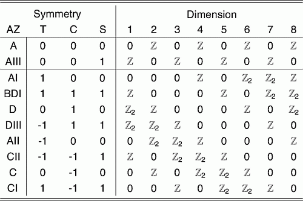

3. Lecture 3 - Topological Insulators II#
In the previous lecture we looked at a couple of key models in the theory of topological insulators. These were the SSH model which is a 1d topological insulator and the Haldane model which is a Chern insulator. So what’s the difference between a Chern insulator and a topological insulator? Both are insulating phases with topological properties and sometimes (depending on who you ask) Chern insulators are considered a subset of topological insulators. An alternative definition for topological insulators is related to symmetry protected topological (SPT) phases. In this definition, the topological modes are also protected by an additional symmetry, however this excludes Chern insulators from being a topological insulator.
In this lecture we will look to understand the importance of symmetries further. To begin, we introduce a classic model for a symmetry-protected topological insulator - the Kane-Mele model
3.1. Kane-Mele#
The foundation of the Kane-Mele model is the Haldane model we saw in the last lecture, though we now add two additional components; spin and spin-orbit coupling. In order to add spin, we simply take two copies of the Haldane model with opposite spin. We additionally let \(\varphi \rightarrow -\varphi\) for \(\uparrow\rightarrow\downarrow\). Therefore, we have
This two copies of the Haldane model means that the Chern number is zero for this model. Is does not mean however that the model is topologically non-trivial, it is simply the wrong invariant to consider for this model. We will see the correct invariant towards the end of the lecture.
We then incorporate spin-orbit coupling using a nearest neighbour Rashba term, which has the form
where \(\alpha\) is the coupling strength and the operators here are actually spinors, \(a_i = (a_{i, \uparrow}, a_{i, \downarrow})^{\rm T}\) with the Pauli matrices acting in the acting in this spin subspace.
As we saw in the previous lecture, it is possible to analyse the spectrum in order to identify the topological phases, however in this case the invariant is not the Chern number. Later on we will address what the invariant is for this model, but for now let’s explore why this model is different to the Haldane model.
3.1.1. Kramers’ theorem#
One of the key differences between the Kane-Mele and Haldane models appears in the edge modes
Insert sketch of the edge modes
In the case of a Chern insulator, we exhibit quantum Hall physics without the magentic field (the quantum anomalous Hall effect) and therefore have chiral edge modes. In contrast to this, topological insulators (in the SPT sense) exhibit the quantum spin Hall effect and have helical edge modes. These are counterpropagating edge modes with opposite spin polarisation. This is expected even in the limit \(\alpha \rightarrow 0\), where we have two copies of the Haldane model with opposite spins and phases. The question then becomes why don’t these edge modes gap out? The answer is Kramers’ theorem.
Kramers’ theorem (in the context of spin-\(\tfrac{1}{2}\)) says that
Given a spin-\(\tfrac{1}{2}\), time-reversal symmetric system, then for every eigenstate, there must be a second degenerate eigenstate related by time-reversal symmetry.
What does this mean in practice? The Kane-Mele model is a time-reversal symmetric model (we will define what we mean by this shortly) and so for each eigenstate, there must be a second eigenstate with the same energy. This second eigenstate will be related to the first by TRS which here corresponds to \({\boldsymbol k} \rightarrow -{\boldsymbol k}\) (up to a lattice vector) and the flipping the spin polarisation.
Therefore at time-reversal symmetric momenta, the spectrum must be degenerate at this point and the edge modes will cross at these momenta. Hypothetically, if we were to allow scatterings that gapped out the modes without breaking TRS, then the degeneracy would be lifted and Kramers’ theorem would be violated. Therefore such perturbations are not allowed and any scattering processes that gap out the modes must break the symmetry, giving us a notion of symmetry protected topological (SPT) phases.
Insert sketch of the above argument
3.1.2. Symmetries#
SPT phases are more general than what we have outlined above using Kramers’ theorem, but what they share is that the topological effects are robust to any symmetry-preserving perturbation. Therefore, it is now worth looking into symmetries in more detail. Symmetries play an important role throughout physics and there are many different types. Here we will focus on three in particular, as they are relevant for classifying topological phases. These are
Time-reversal symmetry
Particle-hole symmetry
Chiral symmetry
3.1.2.1. Time-Reversal#
As we have already alluded to, this is the key difference between the Haldane and Kane-Mele models. The essence of this symmetry is that a Hamiltonian/state/operator will remain invariant under the change \(t \rightarrow -t\). We define a time-reversal operator \(\mathcal{T}\) such that the symmetry is then expressed as
for operators and states respectively. The particular form of this operator depends on the problem but we can make a few general remarks and provide the form used for the Kane-Mele model.
We know intuitively that reversing time should reverse the direction of motion, in other words send \({\boldsymbol k} \rightarrow -{\boldsymbol k}\). This can be obtained by taking the complex conjugate, \(\mathcal{K}\), (as \({\boldsymbol k} = -i{\boldsymbol \nabla}\)). Further to this, it should flip the spin, such that \(\mathcal{T}\sigma_i\mathcal{T}^{-1}=-\sigma_i\)
It’s easy to verify that the operator that acheives this is
In general, the operator has the form \(\mathcal{T} = U\mathcal{K}\), where \(U\) is a unitary matrix. Additionally it should have the property that \(\mathcal{T}^2 =\pm 1\), and it is precisely this condition that leads us to Kramers’ theorem.
3.1.2.2. Particle-Hole#
Sometimes also called charge conjugation, this symmetry swaps particle and holes and therefore takes \({\boldsymbol k} \rightarrow -{\boldsymbol k}\) and \(E \rightarrow -E\). In this course we will encounter this symmetry in superconductors when the Hamiltonians have the form \(H = \tfrac{1}{2}\sum_{\boldsymbol k} \Psi^\dagger({\boldsymbol k}) H_{\boldsymbol k} \Psi({\boldsymbol k})\) with \(\Psi({\boldsymbol k}) = (c_{\boldsymbol k} \hspace{5pt} c_{-\boldsymbol k}^\dagger)^{\rm T}\). In this case the symmetry operator is
\(\tau_x\) is a Pauli matrix acting in the particle-hole (sometimes called Nambu) subspace. As with the time-reversal operator, the general form is \(\mathcal{C} = U'\mathcal{K}\), and \(\mathcal{C}^2=\pm 1\). \(U'\) is a different unitary matrix.
3.1.2.3. Chiral#
This is the least intuitive and we will not go into much detail here. Generally, we have \(\mathcal{S} = \mathcal{T} \cdot \mathcal{C}\) unless both of the other symmetries are not present in which case \(\mathcal{S}^2 = 0,1\).
The SSH model we saw last lecture displayed chiral symmetry due to the presence of the two sublattices (although this does not guarantee chiral symmetry in general). We won’t go into further detail in this course.
3.1.3. Classification#
One of the key reasons to study symmetries is their relation to the classification to topological phases and identifying the corresponding invariants. In particular is the Altland-Zirnbauer classification scheme (sometimes referred to as a periodic table)

Taken from Shinsei Ryu et al 2010 New J. Phys. 12 065010 (https://iopscience.iop.org/article/10.1088/1367-2630/12/6/065010 - on this webpage not in the actual paper???)
This table gives the invariants in various dimensions for different symmetry classes. Let’s now explain the table. In the far-left column we have the Altland-Zirnbauer class. Then in the three columns next to this we have whether the symmetries are present. A value of zero indicates the symmetry is broken, whereas a value of \(\pm 1\) gives the value of the symmetry operator squared. The remaining columns give the type of invariant for various dimensions \(d\). A value of zero means there is no topological phase, a \(\Z\) invariant can be any integer (positive or negative), such as the Chern number and a \(\Z_2\) invariant can only take two values.
Lets now see where the models we have considered so far fit in
IQHE/QAHE (e.g. Haldane model): Class A - not truly an SPT as no symmetries present
SSH Model: Class BDI - all three symmetries are present and in 1d the invariant is a \(\Z\) invariant
Kane-Mele: Class AII - TRS is the only symmetry and in 2d has a \(\Z_2\) invariant
The topological superconductors that we will consider next lecture will sit in class D as they will have particle-hole symmetry but break time-reversal, as they will be spinless. We won’t say any more about this now.
3.1.4. The Kane-Mele invariant#
We now return to the Kane-Mele model, which has a \(\Z_2\) invariant. Let’s aim to understand this invariant.
Consider a Kramers’ pair of edge states, \(\ket{\psi_k^{(1)}}\) and \(\ket{\psi_{-k}^{(2)}}\), related by TRS.
where \(\theta_k\) is a \(k\)-dependent phase. We define a matrix known as a sewing matrix, \(\omega\)
We note that if there are more pairs, this matrix simply becomes block-diagonal. Now, if \(k=-k\) (i.e. at the time-reversal invariant momenta, \(\Lambda_i\)), it is clear that this matrix becomes antisymmetric \((\omega^{\rm T} = -\omega)\) and we can defined a quantity known as the Pfaffian
The invariant, \(\nu\) is then defined in terms of the Pfaffian,
Given the defintion of the Pfaffian above, it is not surprising that the right hand side of this equation is always equal to \(\pm 1\) and therefore \(\nu =0,1\). It is a \(\Z_2\) invariant as expected.
The bulk-boundary consequence gave us a nice relation between the Chern number and the number of edge modes in the system. This is less clear now the values of the invariant are heavily restricted. Instead, this invariant looks at the parity of the number of Kramers’ pairs. If we have an even number of pairs then the we are in the trivial phase, \(\nu=0\) and if the number of pairs is odd then we can have gapless edge modes and \(\nu = 1\).
Insert diagram to show this and add summary